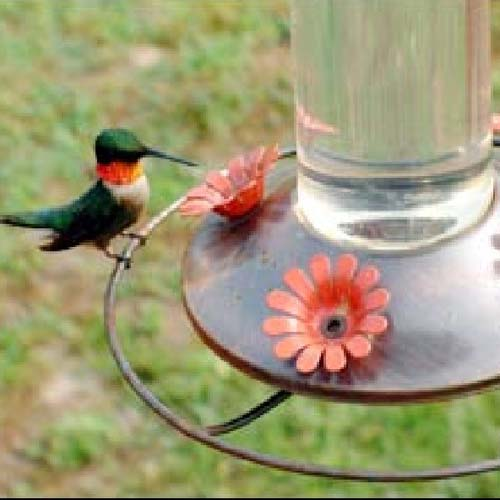
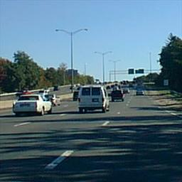
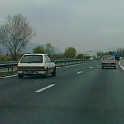
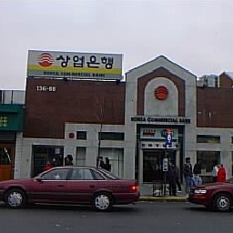

Please answer the following questions:
Age:Sex:
(All responses and data are anonymous)
Images loading... please wait.
Please answer the following questions:
Age:(All responses and data are anonymous)
Please close background programs at this time.
We're really sorry but you are required to run this experiment in full screen mode.
STOP! THE INSTRUCTIONS MAY HAVE CHANGED: PLEASE READ CAREFULLY!!
On the next trial, pay attention to the images in the background. Ignore the letters and digits. At the end of the trial, report which natural scene image you saw in the sequence of masks.
On the next trial, pay attention to the sequence of letters and digits. At the end of the trial, report how many numbers you see in the sequence. For example if you see A, B, 5, C, 1, you would report 2, because you saw two numbers.
{{}}
Press the button corresponding to the number of digits you saw in the sequence of characters.
Did you notice anything different on that trial?
Did you notice something different about the background sequence of images?
Did you notice that a different type of image was presented in the background that was unique in some particular way?
Did you see an actual photograph of a scene in that sequence?
If we told you that there was a photograph in that sequence, could you tell us what it was a photograph of?
One of these 6 images was actually presented on that trial, can you pick out which photograph was shown? If you aren't sure, but you know whether there was an animal or vehicle present, pick an image at random among those pictures.
   Thanks for participating! This HIT does not require a completion code, everything was submitted automatically.
This experiment relies on the fact that participants do not know in advance that they will be asked about the scenes in the background. If you choose to review this HIT for others please do not relay this information! Thank you!
If you have questions, comments, or concerns, please contact dbirman@stanford.edu.
Thanks for previewing the experiment! Please accept the HIT to complete the full experiment.